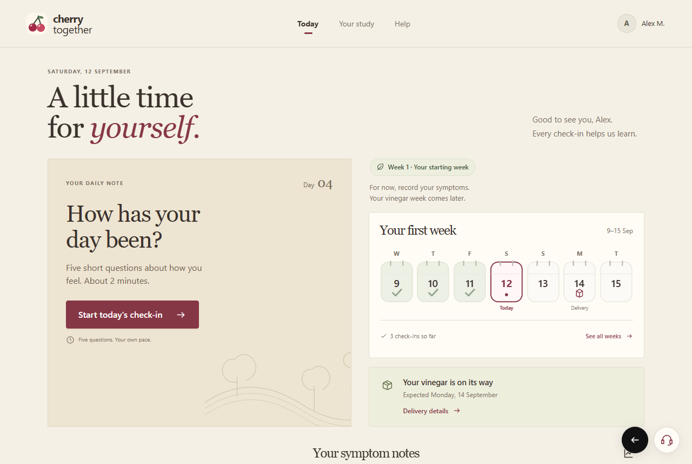
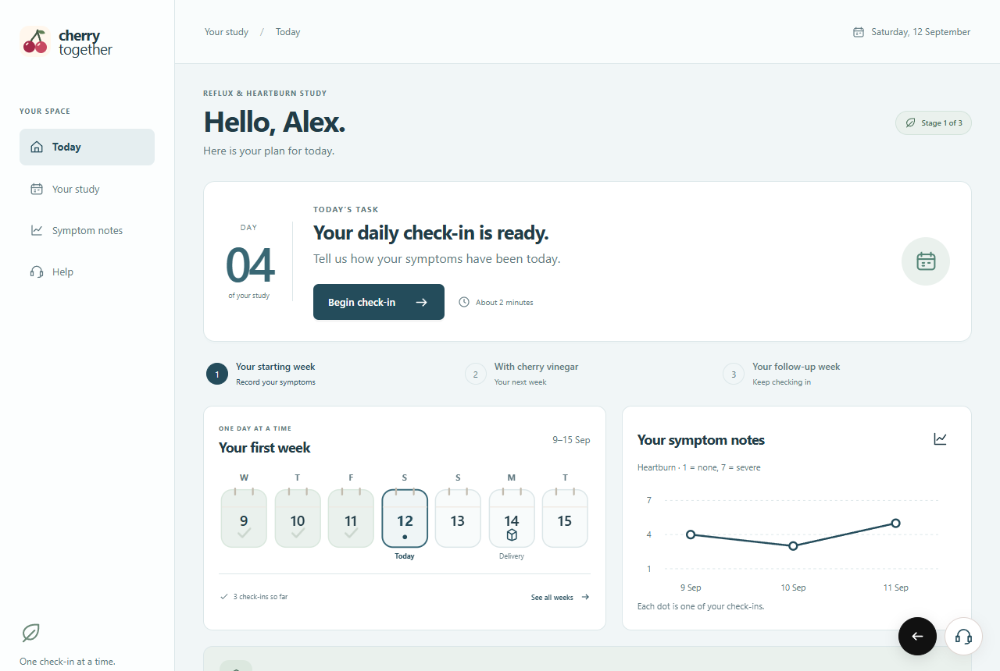
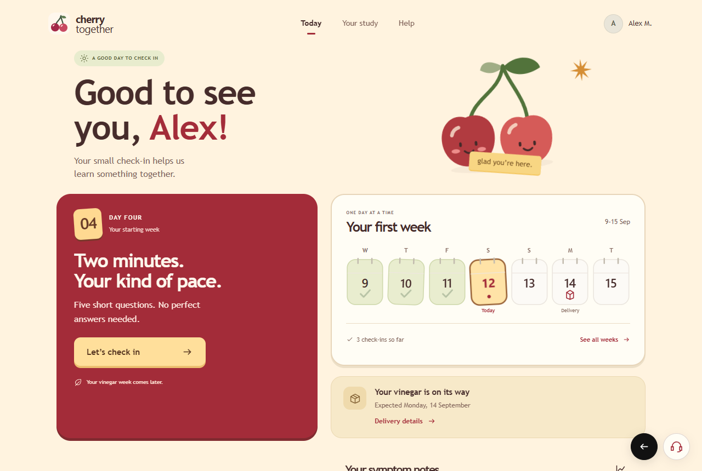
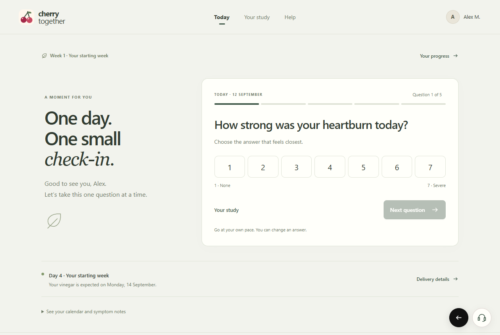
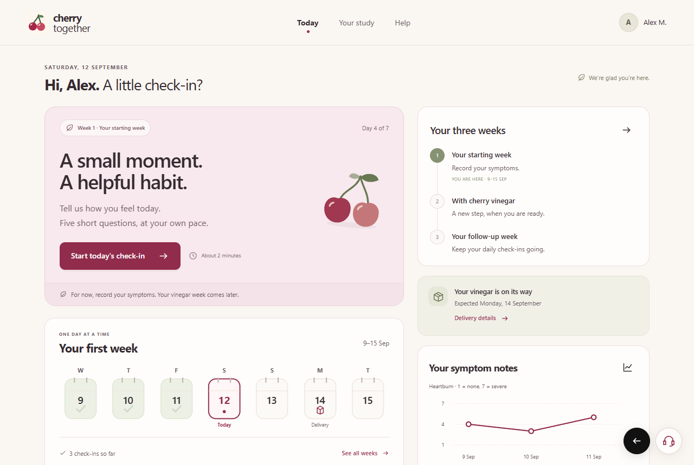

B1
Orchard Journal

Open interactive preview ↗Warm · Editorial · Familiar
A quiet daily journal. Warm paper, generous type, and a little orchard charm.
Five ways Cherry Together could look and feel.
Choose a direction, try a check-in, and use the black circle beside Help to open full size.
Distinct layouts.
The same volunteer.
The same day in the study.

Open interactive preview ↗A quiet daily journal. Warm paper, generous type, and a little orchard charm.

Open interactive preview ↗A composed care dashboard. Clear sections make the study easy to follow.

Open interactive preview ↗A cheerful team feeling. Original cherry characters and a playful weekly calendar.

Open interactive preview ↗One question, one clear next step. A calm workspace with almost nothing in the way.

Open interactive preview ↗One clear daily action, with a welcoming tone and just enough context.
You can choose a whole direction or combine parts: the calendar from one, the colors from another, and a simpler daily flow.